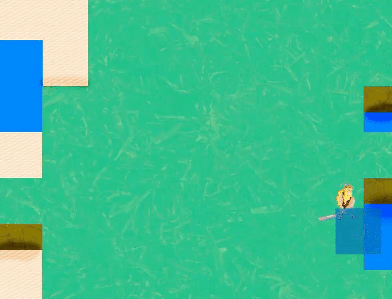
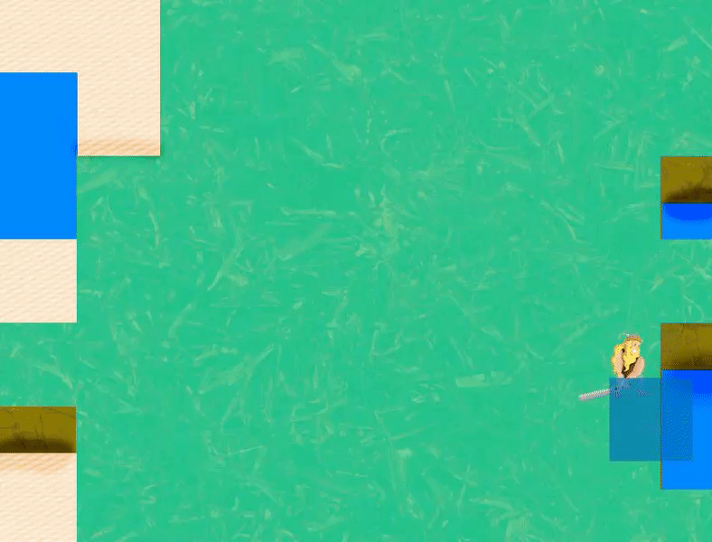
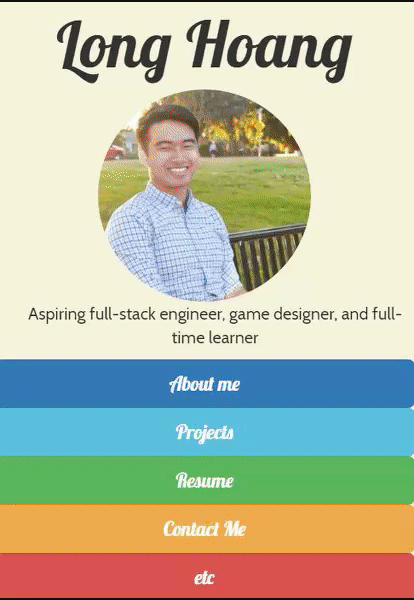
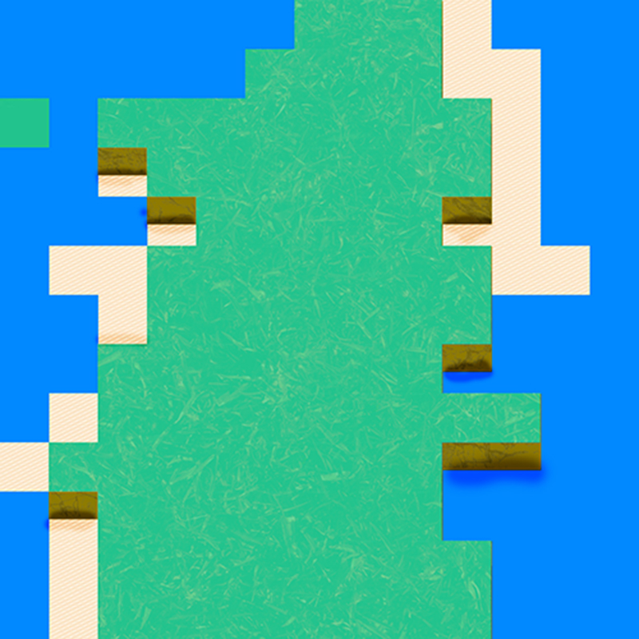

Tatics2.0
 

Tatics2.0 gameplay was inspired by clasic tile based rpgs like Fire Emblem and Final Fantasy Tatics. The game implements both touchscreen controls and Mouse/keyboard commands and game logic is based on a simple DFA state machine.
This project was developed in Java on top of the LibGDX framework, which is a graphical framework that ultilizes OpenGl for Desktop, Android, Ios, and HTML5.
Gameplay logic is all finished, but unfortunately the project has ceased as I'm in desprate need of an graphic designer for animations and sprites :(. Feel free to pull the respotory and make your own game!
Languages and Frameworks: Java, OpenGL, Libgdx, Android SDK
Github:Tatics2.0
Personal Website

I made this website with the purpose to have a place to display my projects adn refine my frontend developement skills. The process of making the website has taught me many important skills in html and css like page load time optimization and responsive design. But overall it was just fun to work on the graphic design portion of it all
Languages and Frameworks: Html, Javascript, CSS/Bootstrap
Github:Personal Website
Photoshop Scripts

A collection of photoshop scripts I made to make my game graphic designing easier. This includes a spritesheet makers that will take the sprite layers in a .psd and compile them into a sheet for animation creation. Another script included is a tile map maker script which reads in a level text file and compiles a corresponding psd. Useful when you're making a game graphics with reoccurring patterns.
Languages and Frameworks: Javascript, Adobe ExtendedScript
Github:Adobe Scripts
Car Dealership Web App

A mock car dealership web application made in java and deployed on Tomcat. Contains both server and Client side operations. This was one of my earliest project and was design to introduce me into basic networking and java operations. Features include: Object searlization, Data saving and loading, TCP client/server networking, and tomcat deployment
Languages and Frameworks: Java,Apache Tomcat
Github:apache webapp